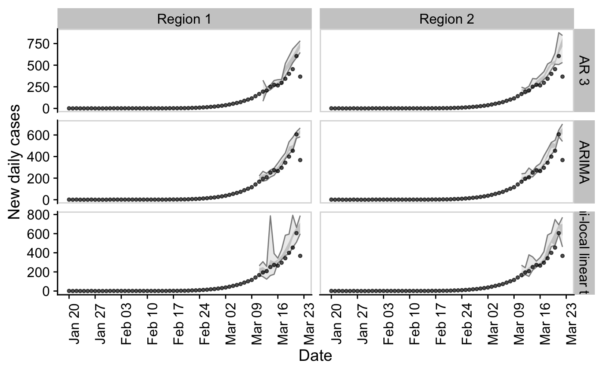

Compare timeseries and forecast models
compare_timeseries.RdCompare timeseries and forecast models
compare_timeseries( obs_rts = NULL, obs_cases = NULL, models = NULL, horizon = 7, samples = 1000, bound_rt = TRUE, min_points = 3, timeout = 30, serial_interval = NULL, rdist = NULL, return_raw = FALSE )
Arguments
| obs_rts | A dataframe of observed Rts including a |
|---|---|
| obs_cases | A dataframe of observed cases including a |
| models | A list of models. A configuration is given in the
examples. Each model needs to be wrapped in a function that takes a |
| horizon | Numeric, the time horizon over which to predict. |
| samples | Numeric, number of samples to take. |
| bound_rt | Logical, defaults to |
| min_points | Numeric, defaults to 3. The minimum number of time points at which to begin iteratively evaluating the forecast. |
| timeout | Numeric, timeout of model fitting in seconds. Defaults to 30 seconds. |
| serial_interval | A numeric vector describing the probability distribution the serial interval.
See |
| rdist | A function to be used to sample the number of cases. Must take two
arguments with the first specfying the number of samples and the second the mean. Defaults
to |
| return_raw | Logical, should raw cases and rt forecasts be returned. Defaults to |
Value
A list of dataframes as produced by evaluate model but with an additional model column.
Examples
## Example data obs_rts <- EpiSoon::example_obs_rts %>% dplyr::mutate(timeseries = "Region 1") %>% dplyr::bind_rows(EpiSoon::example_obs_rts %>% dplyr::mutate(timeseries = "Region 2")) obs_cases <- EpiSoon::example_obs_cases %>% dplyr::mutate(timeseries = "Region 1") %>% dplyr::bind_rows(EpiSoon::example_obs_cases %>% dplyr::mutate(timeseries = "Region 2")) ## List of forecasting bsts models wrapped in functions. models <- list("AR 3" = function(...){EpiSoon::bsts_model(model = function(ss, y){bsts::AddAr(ss, y = y, lags = 3)}, ...)}, "Semi-local linear trend" = function(...) {EpiSoon::bsts_model(model = function(ss, y){bsts::AddSemilocalLinearTrend(ss, y = y)}, ...)}, "ARIMA" = function(...){fable_model(model = fable::ARIMA(y ~ time), ...)}) ## Compare models evaluations <- compare_timeseries(obs_rts, obs_cases, models, horizon = 7, samples = 10, serial_interval = EpiSoon::example_serial_interval) evaluations#> $forecast_rts #> # A tibble: 798 x 12 #> timeseries model forecast_date date horizon median mean sd bottom #> <chr> <chr> <chr> <date> <int> <dbl> <dbl> <dbl> <dbl> #> 1 Region 1 AR 3 2020-03-04 2020-03-05 1 1.32 1.80 1.77 0 #> 2 Region 1 AR 3 2020-03-04 2020-03-06 2 1.91 2.10 1.74 0 #> 3 Region 1 AR 3 2020-03-04 2020-03-07 3 0.101 2.65 4.14 0 #> 4 Region 1 AR 3 2020-03-04 2020-03-08 4 0 0.899 1.52 0 #> 5 Region 1 AR 3 2020-03-04 2020-03-09 5 0.625 1.53 2.02 0 #> 6 Region 1 AR 3 2020-03-04 2020-03-10 6 0.968 1.82 2.51 0 #> 7 Region 1 AR 3 2020-03-04 2020-03-11 7 0 1.45 3.72 0 #> 8 Region 1 AR 3 2020-03-05 2020-03-06 1 1.18 1.93 2.28 0 #> 9 Region 1 AR 3 2020-03-05 2020-03-07 2 0 0.906 1.38 0 #> 10 Region 1 AR 3 2020-03-05 2020-03-08 3 0 0.711 1.93 0 #> # … with 788 more rows, and 3 more variables: lower <dbl>, upper <dbl>, #> # top <dbl> #> #> $rt_scores #> # A tibble: 630 x 14 #> timeseries model forecast_date date horizon dss crps logs bias #> <chr> <chr> <chr> <date> <int> <dbl> <dbl> <dbl> <dbl> #> 1 Region 1 AR 3 2020-03-04 2020-03-05 1 1.12 0.633 1.89 -0.200 #> 2 Region 1 AR 3 2020-03-04 2020-03-06 2 1.00 0.450 1.72 -0.200 #> 3 Region 1 AR 3 2020-03-04 2020-03-07 3 2.75 1.27 2.35 -0.400 #> 4 Region 1 AR 3 2020-03-04 2020-03-08 4 1.43 1.12 2.64 -0.6 #> 5 Region 1 AR 3 2020-03-04 2020-03-09 5 1.38 0.878 2.10 -0.400 #> 6 Region 1 AR 3 2020-03-04 2020-03-10 6 1.74 0.758 1.93 -0.6 #> 7 Region 1 AR 3 2020-03-04 2020-03-11 7 2.55 1.31 2.02 -0.8 #> 8 Region 1 AR 3 2020-03-05 2020-03-06 1 1.56 0.745 1.98 -0.400 #> 9 Region 1 AR 3 2020-03-05 2020-03-07 2 1.44 1.05 2.28 -0.6 #> 10 Region 1 AR 3 2020-03-05 2020-03-08 3 1.79 1.60 61.0 -0.8 #> # … with 620 more rows, and 5 more variables: sharpness <dbl>, #> # calibration <dbl>, median <dbl>, iqr <dbl>, ci <dbl> #> #> $forecast_cases #> # A tibble: 630 x 12 #> timeseries model forecast_date date horizon median mean sd bottom #> <chr> <chr> <chr> <date> <int> <dbl> <dbl> <dbl> <dbl> #> 1 Region 1 AR 3 2020-03-04 2020-03-05 1 37 55.3 54.7 0 #> 2 Region 1 AR 3 2020-03-04 2020-03-06 2 76.5 79.7 63.7 0 #> 3 Region 1 AR 3 2020-03-04 2020-03-07 3 2 103. 152. 0 #> 4 Region 1 AR 3 2020-03-04 2020-03-08 4 0 28.8 47.6 0 #> 5 Region 1 AR 3 2020-03-04 2020-03-09 5 26 80.5 102. 0 #> 6 Region 1 AR 3 2020-03-04 2020-03-10 6 38.5 117. 173. 0 #> 7 Region 1 AR 3 2020-03-04 2020-03-11 7 0 132. 368. 0 #> 8 Region 1 AR 3 2020-03-05 2020-03-06 1 54.5 74.5 85.0 0 #> 9 Region 1 AR 3 2020-03-05 2020-03-07 2 0 39.6 59.6 0 #> 10 Region 1 AR 3 2020-03-05 2020-03-08 3 0 32.1 82.9 0 #> # … with 620 more rows, and 3 more variables: lower <dbl>, upper <dbl>, #> # top <dbl> #> #> $case_scores #> # A tibble: 630 x 15 #> timeseries model sample forecast_date date horizon dss crps logs #> <chr> <chr> <chr> <chr> <date> <int> <dbl> <dbl> <dbl> #> 1 Region 1 AR 3 1 2020-03-04 2020-03-05 1 7.92 19.6 5.32 #> 2 Region 1 AR 3 1 2020-03-04 2020-03-06 2 8.21 15.1 5.31 #> 3 Region 1 AR 3 1 2020-03-04 2020-03-07 3 9.95 53.4 6.16 #> 4 Region 1 AR 3 1 2020-03-04 2020-03-08 4 10.2 56.2 5.72 #> 5 Region 1 AR 3 1 2020-03-04 2020-03-09 5 9.29 42.7 6.06 #> 6 Region 1 AR 3 1 2020-03-04 2020-03-10 6 10.2 62.0 6.41 #> 7 Region 1 AR 3 1 2020-03-04 2020-03-11 7 11.7 120. 22.6 #> 8 Region 1 AR 3 1 2020-03-05 2020-03-06 1 8.78 20.9 5.45 #> 9 Region 1 AR 3 1 2020-03-05 2020-03-07 2 8.80 42.8 6.17 #> 10 Region 1 AR 3 1 2020-03-05 2020-03-08 3 9.52 75.5 50.4 #> # … with 620 more rows, and 6 more variables: bias <dbl>, sharpness <dbl>, #> # calibration <dbl>, median <dbl>, iqr <dbl>, ci <dbl> #>## Example evaluation plot for comparing forecasts ## with actuals for a range of models and timeseries. plot_forecast_evaluation(evaluations$forecast_rts, obs_rts, c(7)) + ggplot2::facet_grid(model ~ timeseries) + cowplot::panel_border()## Hack to plot observed cases vs predicted plot_forecast_evaluation(evaluations$forecast_cases, obs_cases, c(7)) + ggplot2::facet_grid(model ~ timeseries, scales = "free") + cowplot::panel_border()